ステージを作ろう 〜足場とカメラ〜
🎯 この章でできるようになること
- 足場をたくさん並べて、横に長いステージを作れる
- 下から通り抜けられる床（Jumpthru）を作れる
- はじめての「イベント」で、カメラを主人公について来させられる
- 背景の色を変えて、ステージの雰囲気を作れる
※ 前回のプロジェクトが開けない・壊れてしまった人は、第1章の「1-5〜1-7」をもう一度やれば15分ほどで追いつけます。
困ったら講師を呼んでね。
2-1. 前回の続きを開こう
https://editor.gdevelop.io を開き、ログインしていることを確認します。
ホーム画面の左の「作成」を選ぶと、下のほうの「ゲーム」に自分のプロジェクトが並んでいます。
my-action-game の右下にある「開く」を押して開こう。
（すでに開いているプロジェクトは、ボタンが「管理」「保存」に変わっています。）
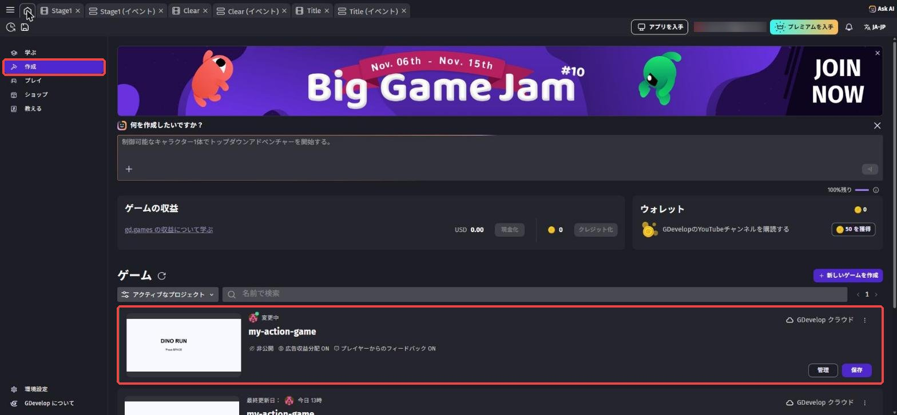
ふつうは Stage1 のシーンがそのまま開きます。
開いていなければ、左上の「≡」でプロジェクトマネージャーを開き、Stage1 をクリックします。
プレビューを押して、前回と同じように走ってジャンプできるか確かめよう。
2-2. ステージの設計図を描こう
いきなり作り始める前に、どんなステージにするか紙に描いてみよう。
プロのゲーム開発でも、まずは紙やホワイトボードにステージを描いてから作ります。
下の図はひとつの例です。
「やさしい → むずかしい」の順に並べると、遊ぶ人が自然にうまくなっていく
ポイントは、最初はやさしく、だんだんむずかしくすること。
いきなり大ジャンプが必要だと、遊ぶ人はすぐあきらめてしまいます。
2-3. 足場ブロック（Block）を作ろう
オブジェクトパネルの「＋」から、アセットストアで block と検索します（右の「ビューポイント」で「サイドビュー」にチェックを入れると探しやすい）。
足場にしたい素材を選んで追加し、名前を Block にしよう。
この教科書では「Wood Block 1」を使い、置いたあとにプロパティの W と H を 64 にしています。
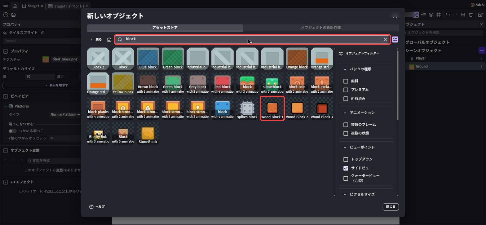
Block をダブルクリック →「ビヘイビア」→「＋ ビヘイビアを追加」→ 検索欄に プラットフォーム と入れて「プラットフォーム」を選ぶ →「適用」。
検索欄に前回の文字が残っていたら、消してから入力しよう。
「つかめる端っこ」のスイッチはオフにしておこう。
第1章の Ground と同じ手順だよ。
これを忘れると、Playerがブロックをすり抜けます。
画面の右上のボタンの列にある「#」のボタンを押して、出てきたメニューの「グリッドを表示」を選ぶと、シーンに方眼が表示されます。
グリッドがあると、ブロックがマス目にピタッとそろって置けるようになるよ。
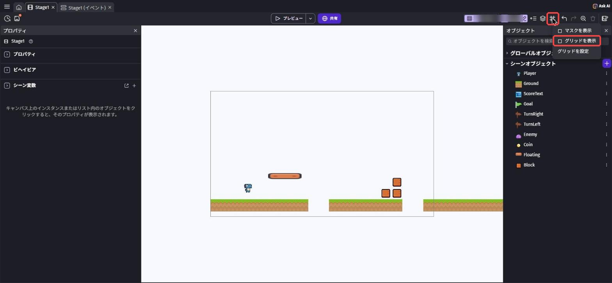
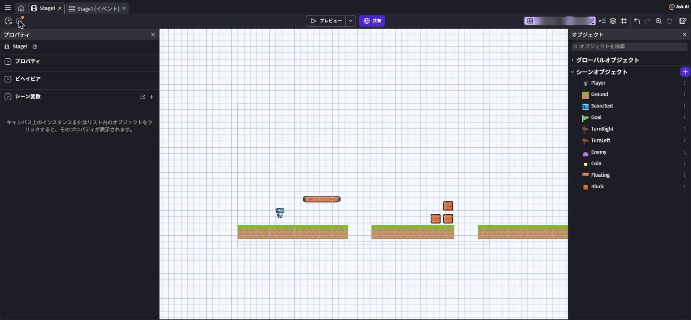
オブジェクトパネルから Block をシーンにドラッグして置きます。
同じものをたくさん置くときは、置いたブロックを右クリック →「複製」すると、すぐ横にもう1つできるよ。
Ctrl + D⌘ + D でも複製できます。
2-2で描いた設計図を見ながら、ステージを組み立てよう。
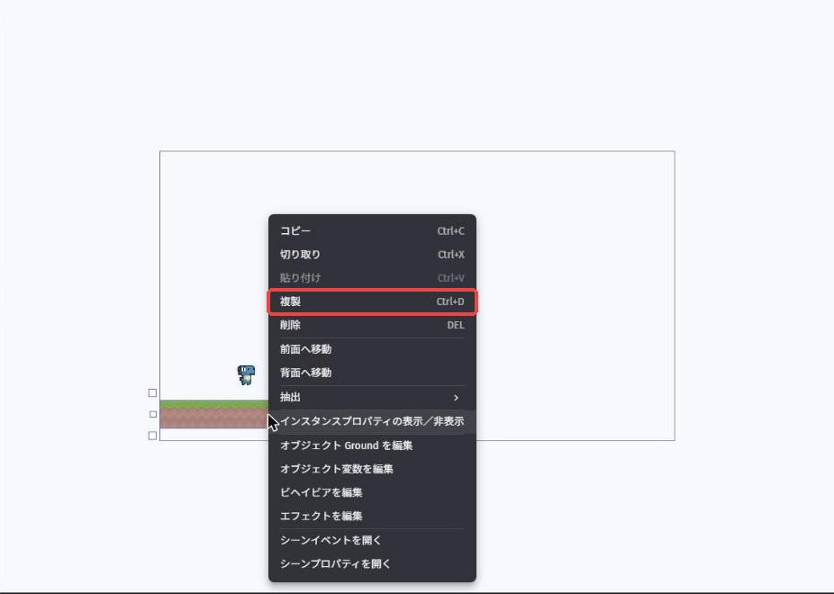
🎬 操作動画: ブロックを複製して、段差や足場を並べていく様子（ch2-mov01）
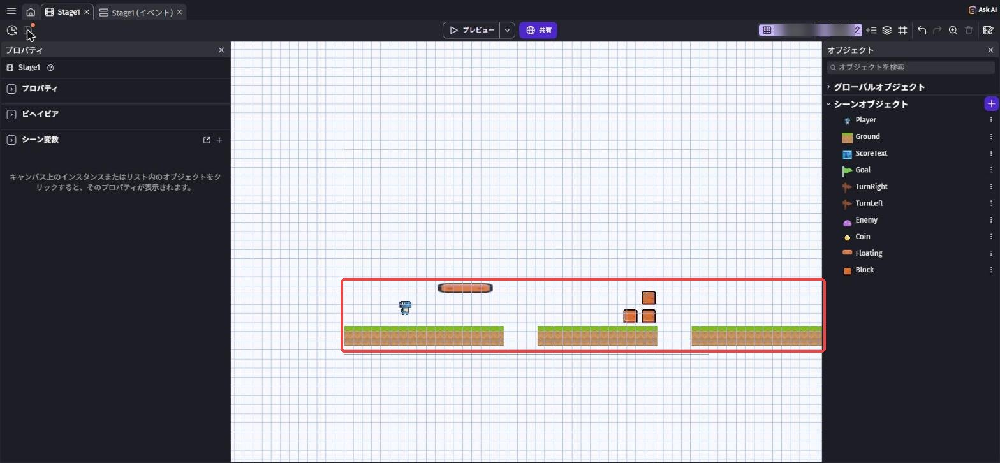
🚨 まとめて選んで動かしたいとき
シーンの何もないところからドラッグして四角で囲むと、中のものをまとめて選べます。
ShiftShift を押しながらクリックすると、1つずつ選択に追加できるよ。
まちがえて地面まで動かしてしまったら Ctrl + Z⌘ + Z で戻そう。
2-4. 下から通り抜けられる床を作ろう
マリオのステージには、下からジャンプするとすり抜けて、上には乗れる床がありますよね。
GDevelopのプラットフォームビヘイビアには、この床に切り替える設定があります。
アセットストアから、薄い板や橋のような素材を追加して、名前を Floating にします（bridge や platform で検索すると見つかるよ）。
Floating にもプラットフォームビヘイビアをつけよう。
オブジェクトパネルで Floating を選ぶと、左のプロパティに「ビヘイビア」が出ます（ビヘイビアは「Platform」という名前で表示されます）。
その中の「タイプ」（足場の種類）を「Jumpthru — ジャンプスループラットフォーム」に変えよう。
ダブルクリックで開く「Floating を編集」の「ビヘイビア」タブで変えて「適用」を押してもOKです。
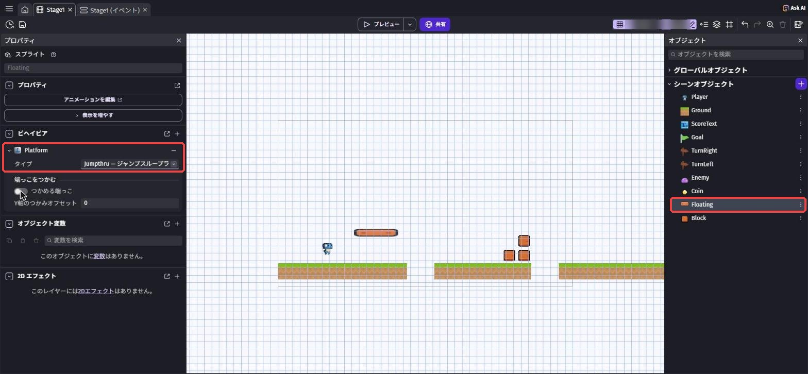
プレビューで、下からジャンプしてすり抜けられるか、上に乗れるか確かめよう。
乗っているときに ↓ キーを押すと、下に降りられるよ。
| タイプ | どうなる？ |
|---|---|
| NormalPlatform — プラットフォーム（ふつうの足場） | ぶつかる。上に乗れる。下からはすり抜けない |
| Jumpthru — ジャンプスループラットフォーム（通り抜け床） | 下からはすり抜ける。上には乗れる |
| Ladder — はしご | ぶつからない。重なっているあいだ ↑↓ キーで登り降りできる |
2-5. はじめてのイベント 〜カメラを主人公について来させよう〜
ステージを横に長くしてプレビューしてみると……右へ走っていくと、Playerが画面の外へ消えてしまいます。
カメラ（ゲーム画面に映る範囲）が、最初の場所から動いていないからです。
ここで、GDevelopのいちばん大事な機能、イベントが登場します。
イベントで「カメラをPlayerの位置に合わせる」と命令すると、ずっとついて来てくれる
「条件（もし〜なら）」と「アクション（〜する）」の組み合わせでできている。
条件を何も書かないと、「いつでも・ずっと」という意味になるよ。
画面のいちばん上のタブに、「Stage1」と「Stage1 (イベント)」の2つが並んでいます。
「Stage1 (イベント)」をクリックすると、ルールを書く画面（イベントシート）に切り替わります。
見つからないときは、プロジェクトマネージャー（≡）で Stage1 を右クリック →「イベントシートを開く」を選んでもOK。
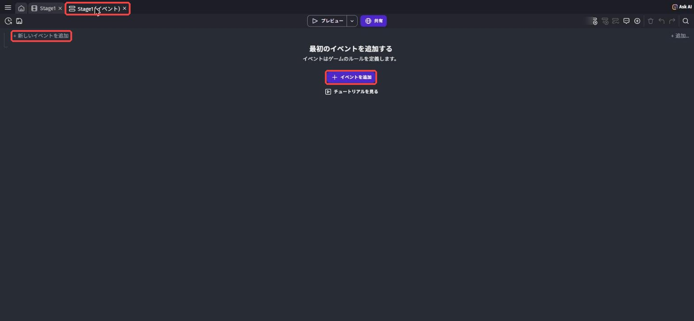
イベントシートの左上にある「＋ 新しいイベントを追加」を押します。
イベントが1つもないときは、真ん中の「＋ イベントを追加」ボタンでもOK。
左に「＋ 条件を追加」、右に「＋ アクションを追加」と書かれた空のイベントが1つできます。
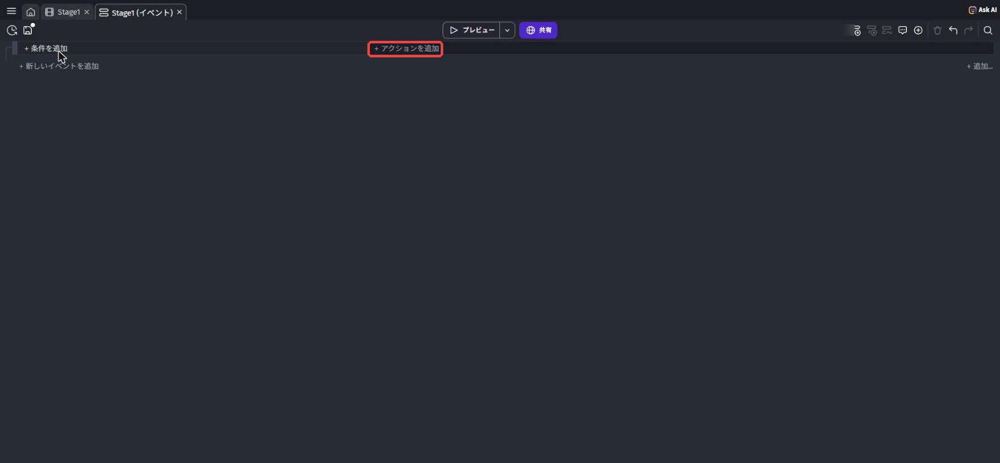
今回は条件は空のまま。
右側の「＋ アクションを追加」を押して、検索欄に 中央 と入力します。
「オブジェクトの中央にカメラを合わせる」（カメラ › レイヤーとカメラ）を選ぼう。
「カメラを中央」のように入れると何も出てこないので、中央 だけで検索してね。
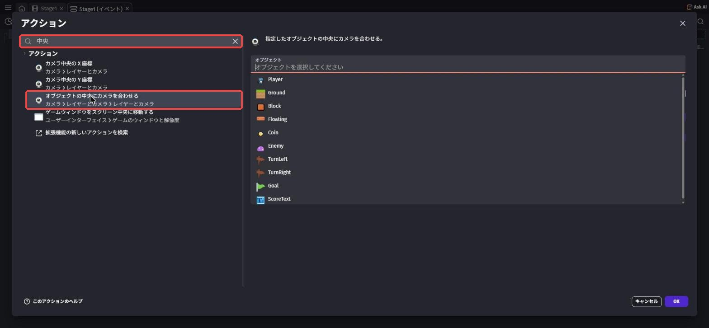
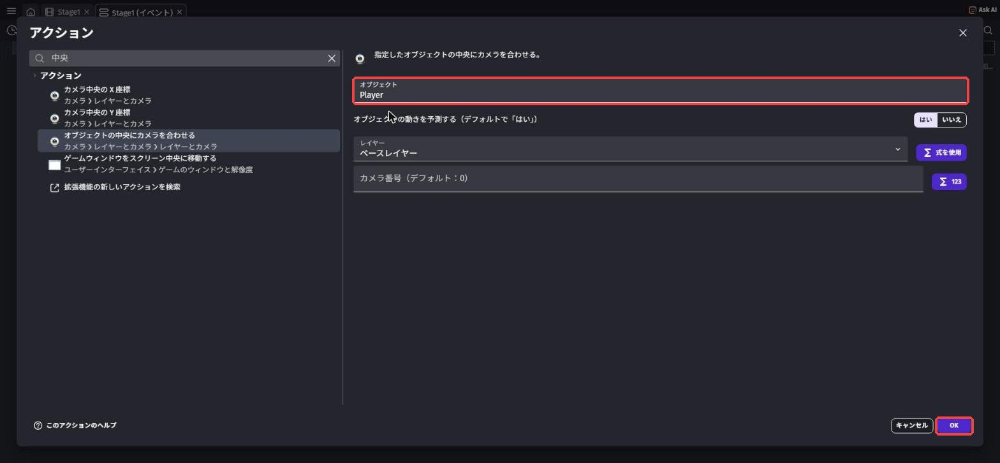
右側の設定欄の「オブジェクト」を押して、一覧から Player を選び、右下の「OK」を押します。
ほかの欄（「オブジェクトの動きを予測する」、「レイヤー」の「ベースレイヤー」など）は、最初の値のままでOK。
イベントシートが次のようになっていれば完成です。
Player の位置にカメラの中央を合わせる（レイヤー： ベースレイヤー）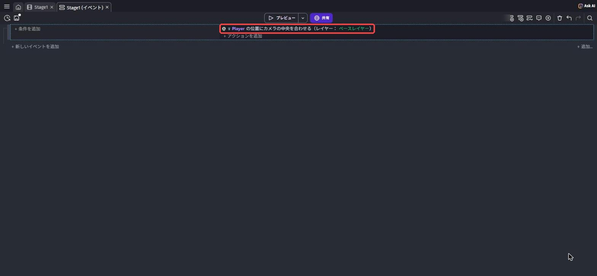
プレビューを押して右へ走ってみよう。
カメラがPlayerを追いかけて、ステージの奥まで見えるようになったら成功！
Ctrl + S⌘ + S で保存も忘れずに。
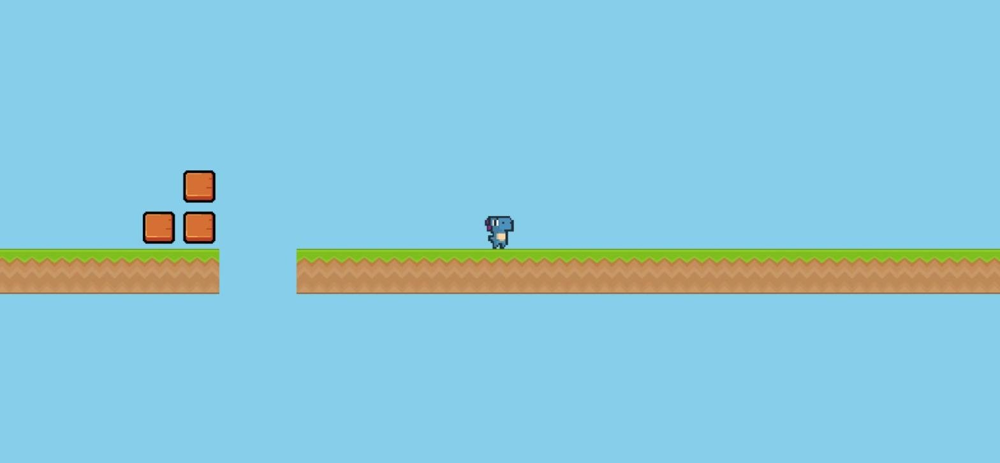
もっとなめらかなカメラにしたい人へ（任意）
公式コース「Make a Platformer Game」では、イベントのかわりに「滑らかなプラットフォーマーカメラ」というビヘイビアを Player につける方法を使っています（ビヘイビアの検索で カメラ と入れると見つかる）。
カメラが少し遅れてふわっとついて来るので、プロっぽい動きになります。
さらに、アクション「境界内にカメラを強制する」（カメラ で検索）を使うと、ステージの外がうつらないようにできます。
まずは今日の「オブジェクトの中央にカメラを合わせる」で動くことを確かめてから、ためしてみよう。
その1枚1枚を「フレーム」と呼ぶ。
イベントは毎フレーム、上から順番にチェックされているんだ。
だから「条件なし」のイベントは、1秒に何十回も実行され続けるよ。
2-6. 背景の色を変えよう
シーンエディタのタブに戻ります。
シーンの何も置いていない場所を右クリックして、メニューのいちばん下の「シーンプロパティを開く」を選びます。
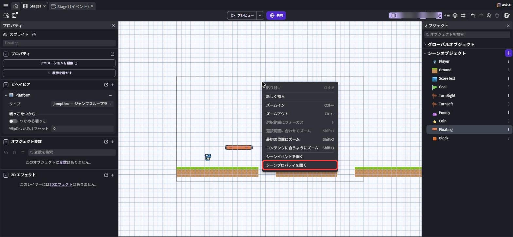
「Stage1 プロパティ」の画面が開きます。
「シーンの背景色」の右はしの色の四角をクリックして、好きな色を選び、「OK」を押そう。
欄には色が「赤;緑;青」の3つの数字で出ます（この教科書の水色は 135;206;235）。
昼の空なら水色、夜のステージなら紺色、どうくつなら茶色……と、ステージのテーマに合わせるのがコツ。
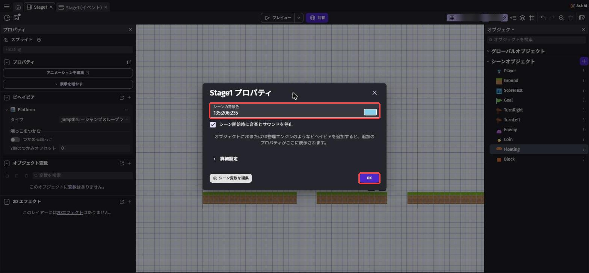
2-7. 💪 やってみよう
課題1: 画面3つ分以上の長さのステージにしよう
2-2の設計図をもとに、プレビューの画面3つ分以上の長さのステージを作ろう。
穴（地面のないところ）を1つ以上入れて、ジャンプで越えられるように調整します。
ヒントを見る
穴に落ちると、今はずっと落ち続けてしまいます（第4回で直します）。
落ちたらプレビューを閉じて、もう一度プレビューすればやり直せるよ。
穴の幅は、第1章の課題1で決めたジャンプ力で「ギリギリ越えられる」くらいが楽しい。
課題2: はしごを作ろう
高い場所へ登れるはしごを作ろう。
はしごっぽい素材を追加してプラットフォームビヘイビアをつけ、「タイプ」を「Ladder — はしご」にします。
ヒントを見る
はしごの上に足場（Block）を置いておくと、登りきったあとに乗れるよ。
はしごに重なった状態で ↑ キーを押すと登れます。
課題3（チャレンジ）: 友だちにテストプレイしてもらおう
となりの人に自分のステージを遊んでもらい、「むずかしすぎた場所」「楽しかった場所」を聞いてみよう。
意見をもとに、1か所以上ステージを直したら合格。
ヒントを見る
作った本人は、ステージの攻略法を知っているので「かんたん」に感じがち。
初めて遊ぶ人の様子をだまって見ていると、どこで困っているかがよくわかるよ。
2-8. 🚨 つまずきポイント集
プレビューしても、カメラがついて来ない
原因1: イベントを、条件側（左）に入れてしまった。
→「オブジェクトの中央にカメラを合わせる」はアクションなので、右側の「＋ アクションを追加」から追加し直そう。
原因2: 対象のオブジェクトが Player 以外になっている。
→ アクションをダブルクリックして、「オブジェクト」が Player になっているか確認しよう。
ブロックをすり抜けてしまう
原因: Block にプラットフォームビヘイビアがついていない。
直し方: Block の「ビヘイビア」を確認して、プラットフォームビヘイビアを追加しよう。
ビヘイビアはオブジェクト（設計図）につけるので、置いたブロック全部にまとめて効くよ。
通り抜け床なのに、下から頭をぶつける
原因: 「タイプ」が「NormalPlatform — プラットフォーム」のまま。
直し方: Floating の「ビヘイビア」で、「タイプ」を「Jumpthru — ジャンプスループラットフォーム」に変えて「適用」を押したか確認しよう。
ブロックを置こうとすると、ほかのブロックが選ばれてしまう
原因: 重なっている場所でクリックしている。
直し方: 少しずらした場所でクリックするか、ズームして大きく表示してから操作しよう。
どうしても選びにくいときは、いったん離れた場所に置いてから、ドラッグで正しい位置に動かすとやりやすいよ。
イベントのタブが見つからない
直し方: 左上の「≡」でプロジェクトマネージャーを開き、Stage1 を右クリック →「イベントシートを開く」を選ぶと、イベントシートが開きます。
💡 15分たっても直らないときは、次の「AIを味方につけよう」の方法で相談してみよう。
2-9. 🤖 AIを味方につけよう
イベントの相談をするときは、イベントシートの中身を、左（条件）と右（アクション）に分けて文字で伝えるとAIが理解しやすくなります。
この章でのAIの使い所
✅ 良い使い方 — 自分で15分考えてわからなかったら聞く
- イベントがうまく動かないとき: 条件とアクションを書き写して、どこがおかしいか一緒に考えてもらう
- ステージ作りのコツ: 「遊びやすいステージの作り方」の考え方を教えてもらう（作るのは自分）
そのままコピペで使えるプロンプト（AIへの指示文）の例:
イベントシートに「条件: なし／アクション: Player の位置にカメラの中央を合わせる（レイヤー： ベースレイヤー）」と書きましたが、プレビューしてもカメラが動きません。
確認するべきことを、順番に教えてください。
初めて遊ぶ人が「むずかしすぎてやめる」のを防ぐには、ステージの最初の部分をどう作ればいいですか？
考え方のポイントを3つ教えてください。
🚫 やめておこう
- ステージの設計図をAIに丸ごと考えてもらう（設計図を描くのが今日のいちばん大事な練習！）
- AIの答えを試して確かめずに信じる（AIは古いGDevelopの画面や、英語の画面の名前で答えることもある。
ボタンやアクションの名前は、必ず自分の画面で確認）
2-10. ✅ チェックリスト
全部チェックできたら第2章クリア！
🎉 次回は、イベントをもっと使いこなして、コインを取るとスコアが増えるしくみを作るよ。
2-11. 📚 もっと知りたい人へ
- 公式プラットフォーマーチュートリアル Part 3「Create Platforms」（英語） — 足場づくりの公式手順
- プラットフォームキャラクター（Platformer character）の解説（公式Wiki・英語） — 足場のタイプのくわしい説明もここにある
- GDevelop公式Wiki（英語） — 「Events」のページで、イベントのしくみを公式の説明で読める